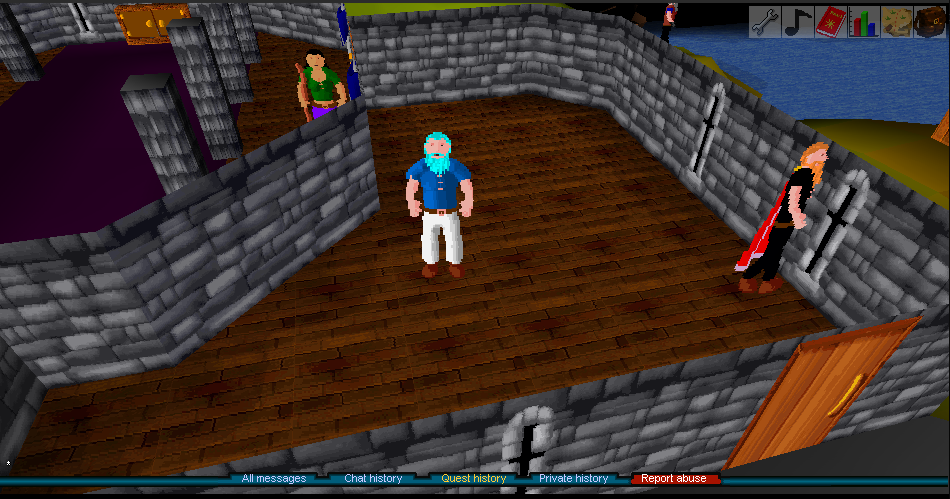
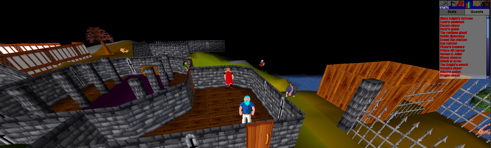

No servers. No setup. No internet required. Just pure solo RuneScape Classic gameplay — preserved and reimagined.


Features
Core
- 100% single-process design — no external DB, server, or internet required
- All core content including all 50 quests
- 18-skill bot system with auto-banking and combat support
- Batched skill actions (woodcutting, mining, cooking, etc.) using a tick-based batch system
- Resizable UI — drag to any window size (desktop) / pinch zoom (mobile)
- Full music — 55 MIDI tracks mapped to game regions
- Dynamic login screen
- Multi-account capable
- 8x XP multiplier (configurable 1x–50x)
- Hardcore mode — death permanently deletes your save
Quality of Life
- Bank accessible anywhere via
::bank - Teleport utility via
::tele <area>or coordinates ::stuckto unstick your character- Item swapping in bank via right-click
- Bob's Axes stocks hatchets (Bronze → Rune) and pickaxes (Bronze → Rune)
- Admin account: create user named
rootfor all admin commands
Desktop (v2.4.6)
- Java 17+ required
- Launch via
run.sh(Linux/macOS) orrun.bat(Windows) - Resizable window with dynamic UI scaling
- Build from source with included compile command
Mobile (v2.4.6)
- Android 7.0+ (API 24) — ~6 MB
- Tap = left click, Long press = right click
- Double tap = toggle on-screen keyboard
- Pinch zoom in/out, two-finger drag to rotate camera
- All bot commands work identically to desktop
Bot System
- Gathering:
::woodcut,::fish,::mine— auto-bank when inventory full - Combat:
::combat,::ranged,::magic— auto-eat food when HP drops - Production:
::cook,::fm,::smith,::fletch,::craft,::herblaw - Support:
::agility,::thieve,::prayer - Manage with
::bot start/stop/pause/status/list
Commands
::bank— open bank anywhere::tele <location>— teleport to named areas or coordinates::stuck— unstick character::pos— show current coordinates::toggleroofs— toggle roof rendering::mapedit— open real-time map editor- Admin (root):
::item,::npc,::object,::set,::addbank,::quest,::find, minimap right-click teleport
Screenshots


